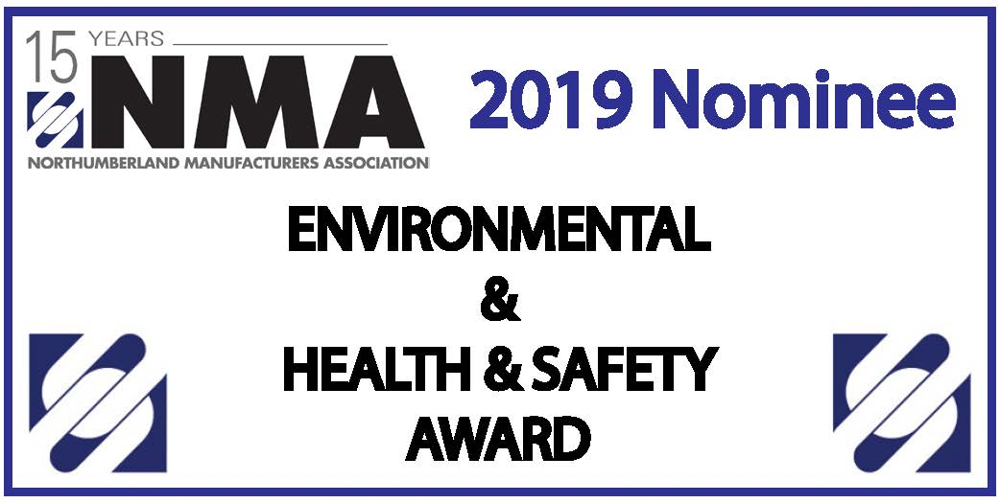

Reach or exceed your ESG commitments
By partnering with a materials recovery innovator.
Recycling industrial plastic scrap in Campbellford, Ontario since 1998.
Min-Tech has pioneered environmentally friendly industrial plastic scrap recycling since 1998. From our 42,000 square foot facility in the Tanner Industrial Park in Campbellford, Ontario, we help manufacturers keep waste out of landfill by finding a second life for their industrial scrap.
Min-Tech was founded by Dale McLellan, who brings 35 years of experience in the scrap sector, including a decade running a plastic pelletizing facility in Quebec and years spent modernizing plastic manufacturing plants abroad. Along the way, Min-Tech has supplied millions of pounds of reclaimed plastic to major manufacturers such as Trex.
In August 2026, Min-Tech was acquired by the Clean Lifecycle Network (CLN Global Inc.). As part of a networked group of circular economy companies, we now offer manufacturers a broader range of materials recovery and recycling solutions than ever.
We're purpose-driven. Partner with us to make measurable progress toward your commitments and goals, and make a meaningful impact on your supply chain. Our mission is to expand the boundary of what's recoverable, turning complex industrial plastics problems into circular solutions.
By partnering with a materials recovery innovator.
By leveraging the waste materials you're already producing.
By commercializing your waste streams.

“For more than 20 years, Min-Tech has strived to achieve the highest standards for health & safety in the recycling sector. We were honoured to have been recognized by the Northumberland Manufacturers Association and the NMA Environmental Health & Safety Award in 2019 for our efforts.”
Based in Campbellford, Ontario, Min-Tech's multi-disciplinary team of innovators, materials scientists and frontline operators take industrial plastic and manufacturing scrap from waste to worth. If you want hands-on work with a great team and real environmental impact, we'd like to hear from you. Click the button below to visit Min-Tech's job openings on Indeed.
Explore Job Postings (opens in a new window)Min-Tech is part of the Clean Lifecycle Network (CLN), a group of leading circular economy solutions companies recovering hard-to-recycle post-industrial and hazardous materials, and recapturing them as high-value resources.
Visit clnenv.com (opens in a new window)Talk to us about the Buy Back Program, product destruction, materials recovery and commercialization, or zero-waste programs for your manufacturing operations.